planex2d: fast, exact 2D geometry for Python
planex2d is a 2D geometry kernel for Python, written in C++. You draw outlines from lines, arcs, circles and splines, combine them with exact Boolean operations, dimension them with constraints, and clean up drawings imported from other tools. The resulting faces go to OpenCASCADE, netgen/NGSolve, gmsh and other tools for 3D modeling, meshing and simulation.
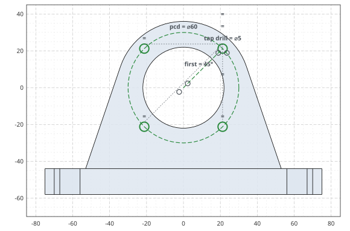
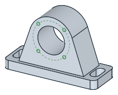
Installation
pip install planex2d
The package is called planex2d on PyPI and planex in Python (import planex as px). Version 0.1 has no
prebuilt wheels yet, so pip builds it from source. See Installation for the two extra
steps this needs and for the optional packages.
A first sketch
planex2d has two sketch types with the same drawing calls. A QuickSketch draws the geometry directly, and a
Sketch also solves constraints (see Sketching below). The simplest way to draw is with the pen. Line
draws along the current direction, Turn changes the direction, Arc continues with a tangent arc, and
Close joins the outline to its start. Circle adds a hole. The result is an angle bracket with an inner fillet
and two holes.
import planex as px
bracket = px.QuickSketch()
bracket.Line(60).Turn(90).Line(10).Turn(90).Line(40)
bracket.Arc(10, -90).Line(30).Turn(90).Line(10).Close()
bracket.Circle(45, 5, 2.5).Circle(5, 35, 2.5)
face = px.Face(bracket.Wires())
face.Plot()

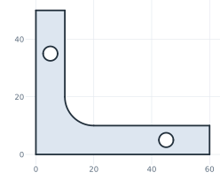
Geometry can also be defined by its relations to other elements instead of computed coordinates. The next sketch draws two bosses as construction circles, joins them with two tangent lines, and closes the outline with arcs that lie on the bosses’ circles. planex2d finds the tangent points. Slots, fillets, offsets, patterns and the other profile tools work the same way.
import planex as px
link = px.QuickSketch()
link.Circle(0, 0, 1.5, id="boss1", construction=True)
link.Circle(6, 0, 1.0, id="boss2", construction=True)
link.Line(tangent=("boss1", "boss2"), id="upper")
link.Line(tangent=("boss1", "boss2"), reverse=True, id="lower")
link.Arc("lower", "upper", congruent="boss2", id="end2")
link.Arc("upper", "lower", congruent="boss1", id="end1")
link.Circle(0, 0, 0.6, id="hole1").Circle(6, 0, 0.4, id="hole2")
face = px.Face(link.Wires())
face.Plot()

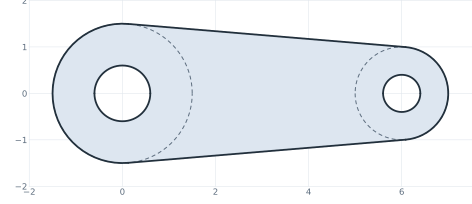
The API conventions describe the few rules the whole Python API follows.
Speed
planex2d does only 2D geometry, embedded in 3D where needed, and is built for speed. In our benchmarks it is faster than general-purpose OpenCASCADE and several polygon libraries on most of the tested tasks, while keeping arcs and circles exact. See the benchmark results for the tests, the method and the timings.
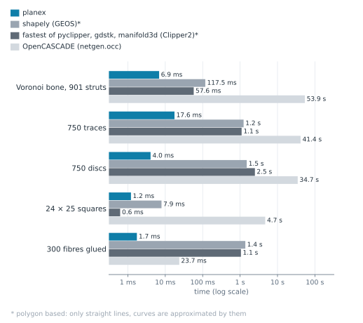
Unions: planex2d vs polygon libraries vs OpenCASCADE
How planex2d works
Faces that touch share their edges exactly. planex2d splits edges where they cross or overlap, keeps the pieces that belong to the result and joins them into its boundary. Each vertex is computed once and shared bit-exactly by the edges that meet there, so neighboring faces meet without gaps. The figure shows the same approach for an offset: each edge is offset on its own, the offset edges are cut where they cross, and the pieces that belong to the result form the new face.

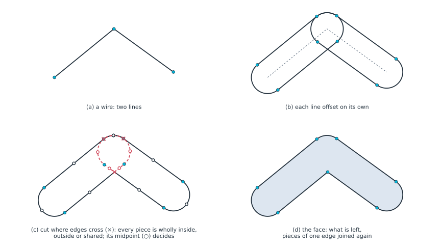
Holes do not depend on drawing direction. Whether a loop is material or a hole follows from how deep it is nested. A loop inside an odd number of other loops is a hole, and a loop inside an even number is material, however it was drawn.

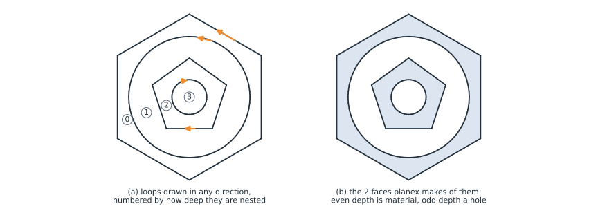
Imported drawings can be cleaned up. Drawings from DXF files and other tools often have tiny gaps and very short
edges, which get in the way of Boolean operations and meshing. CloseGaps snaps endpoints to nearby endpoints
within a tolerance you give, and RemoveSmallEdges removes edges shorter than a given length and merges their ends. See
Small gaps and Small edges for details.

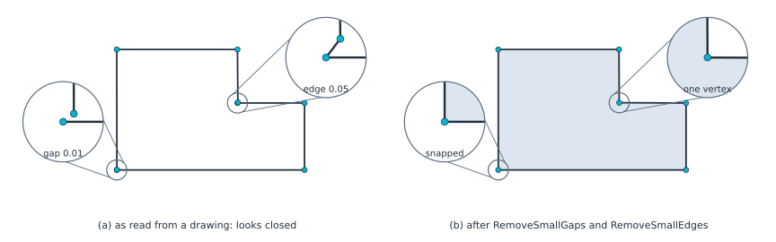
Tessellated outlines can become curves again. Outlines made of many short edges can be simplified. planex2d fits arcs to chains that are nearly circular and replaces runs of short edges along a smooth curve with one spline, within a tolerance you give. See Defeaturing for details.

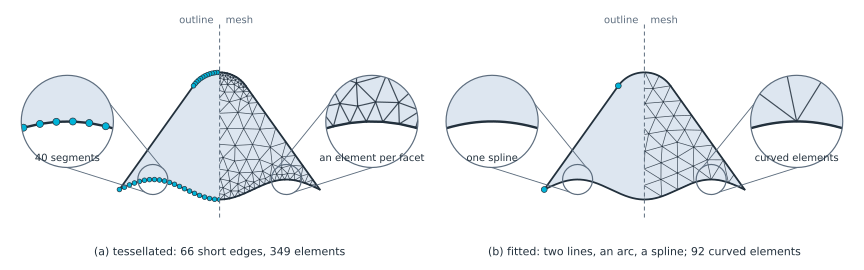
Sketching
A Sketch adds a constraint solver to the same drawing calls. You add geometric constraints and dimensions, and
the solver keeps them satisfied after every change. This is what makes parametric design possible: change a
dimension later, and the drawing follows. See the guides to quick sketches and
constraint sketches.
In the example below, three lines are drawn roughly between two fixed circles. The constraints make each line tangent to both circles, with its ends on them. The solver starts from the rough drawing, so each line keeps the side and direction it was drawn with.
sk = px.Sketch()
sk.Circle(0, 0, 1.0, px.Fix, id="left")
sk.Circle(4, 0.5, 0.6, px.Fix, id="right")
sk.Move((-0.3, 1.4)).Line((4.2, 1.3), id="upper")
sk.Move((0.2, -1.3)).Line((4.1, -0.3), id="lower")
sk.Move((0.1, 1.2)).Line((3.6, -0.2), id="cross")
for line in ("upper", "lower", "cross"):
sk.Constrain(line, "left", px.Tangent)
sk.Constrain(line, "right", px.Tangent)
sk.Constrain(line + ".start", "left", px.Coincident)
sk.Constrain(line + ".end", "right", px.Coincident)

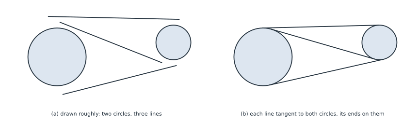
A constraint sketch can describe a complete part. The tilt bracket (a) has bosses, tangent edges, R6 fillets and a
curved slot centered on the pivot. The T-slot profile (b) dimensions one eighth of the section and builds the rest
by symmetry. Green means the sketch is fully constrained. Named dimensions, such as the length of AB, can be
changed later, and the sketch updates.
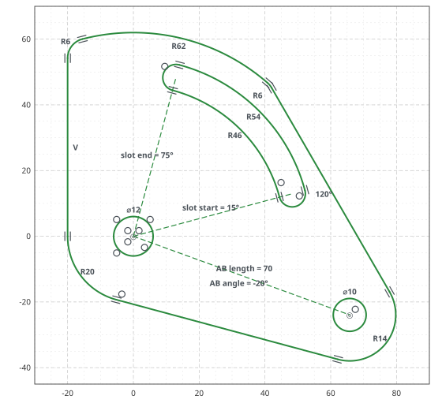
(a) Tilt bracket
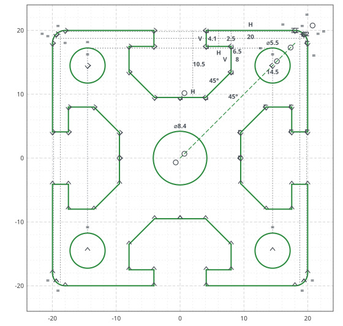
(b) T-slot extrusion profile
Parameter sweeps. Because a constraint sketch can be updated, one parametric sketch can produce a whole family
of designs. The meander inverted-F antenna below is one sketch: a linear pattern repeats the meander, and the depth, pitch, feed
offset and number of meanders are dimensions. Each design is one call to Update on the same sketch, here the
one for design (b). The copper is the center line offset by half the trace width.
antenna.Update({"meanders.count": 4, "depth": 5, "pitch": 2, "feed offset": 2})

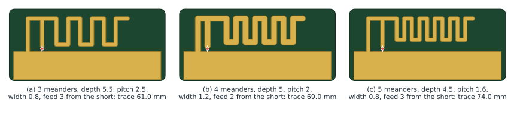
Optimization
planex2d works with numerical optimizers. In the 3D cold plate example, SciPy’s COBYLA optimizer moves four points of a constrained pipe sketch. Each candidate layout is meshed by netgen and solved in NGSolve for the oil flow and the plate temperature in 3D. The optimizer lowers the hottest temperature while keeping the pressure drop within a limit.
from scipy.optimize import minimize
result = minimize(pnorm, x0, method="COBYLA", constraints=limits)
Here pnorm builds and solves one layout and returns a smooth measure of the hottest temperature, and limits
keep the pipe’s bends, clearances and pressure drop within bounds. The figures compare the straight pipe the
optimizer starts from, the best layout it found, and that layout in 3D.
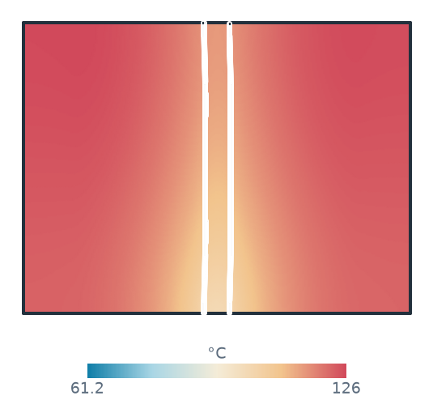
(a) Initial straight pipe
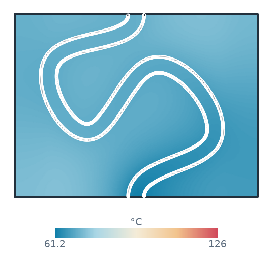
(b) Optimized pipe layout
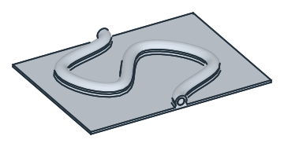
(c) Optimized layout in 3D
Using the solver directly
The constraint solver is not limited to drawings. It can solve mechanisms and other geometric systems whose positions follow from dimensions and relations. One sketch models Jansen’s walking leg, with the crank angle updated for each frame (a). Another sweeps the cylinder lengths of an excavator arm to find the reach of its tooth (b). The same arm also solves the other way round: give the tooth’s position and the bucket angle, and the solver returns the cylinder lengths (c).
This shows where the tooth can reach a level floor and where the cylinders’ stroke limits make a position impossible. See the excavator arm example for the complete model.
(a) Jansen's leg: one sketch, the crank angle updated
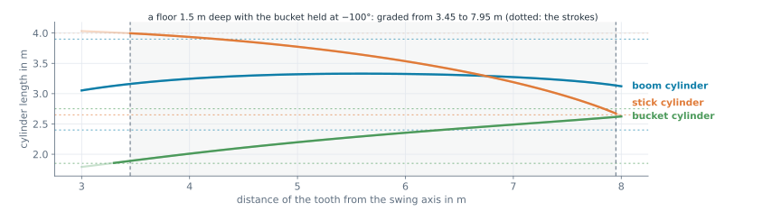
(c) Cylinder lengths for a level floor 1.5 m deep, with the bucket held at −100°
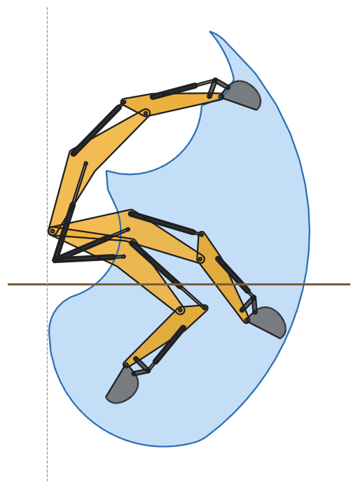
(b) Reach of an excavator's tooth
Integrations: import and export
planex2d passes faces to OpenCASCADE, netgen/NGSolve and gmsh, and reads geometry from KiCad, DXF and shapely.
The examples show a tilt bracket extruded and analyzed in NGSolve (a), a face meshed with quadrilaterals by gmsh (b), and a KiCad board read with its copper and drill holes (c). The board is the pic_programmer demo from the KiCad project. Its image is reproduced under the same CC BY-SA 4.0 license.

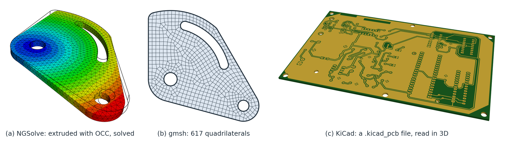
Examples

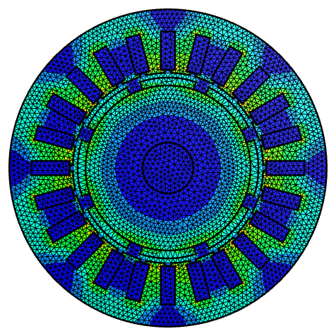


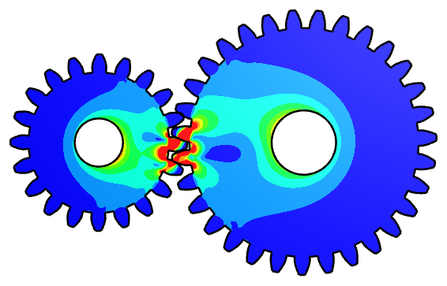

See the full example collection, from mechanisms and antennas to meshing and simulation. Each example is checked against a formula or a measured property.
License
planex2d is free software under the GNU Lesser General Public License, version 2.1 or later. It includes code from Eigen, pybind11 and Taskflow, uses the Netgen library, and makes use of facilities provided by Open CASCADE Technology. See License and notices for the licenses and notices.